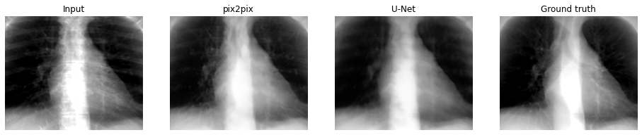
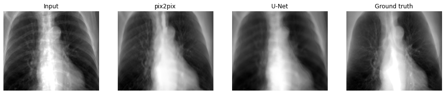
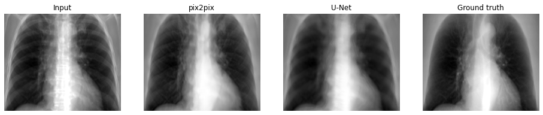

pix2pixとU-Netの比較¶
2つのモデルが出力する画像を比較する。
前準備¶
主要パッケージのインポート¶
[1]:
import pathlib
import matplotlib.pyplot as plt
import numpy as np
import pandas as pd
from PIL import Image
from IPython.display import display
from logging import basicConfig, getLogger, INFO
basicConfig(level=INFO, format='%(asctime)s %(levelname)s :%(message)s')
logger = getLogger(__name__)
データディレクトリの指定¶
[2]:
DATA_ROOT = pathlib.Path('Data/Images/chest_xray')
INPUT_IMAGE_DIR = 'bone_enhancement'
TRUTH_IMAGE_DIR = 'bone_suppression'
CLASS_LABELS = ('lung')
IMAGE_EXT = '.png'
画像ファイルを基にpd.DataFrameを作成する¶
[3]:
def create_dataset_df(data_root, input_dir, truth_dir, image_ext):
dfs = []
root = pathlib.Path(data_root)
image_filenames = (root / pathlib.Path(input_dir)).glob('*' + image_ext)
df = pd.DataFrame(image_filenames, columns=['input_path'])
df['truth_path'] = df['input_path'].map(
lambda p: root / pathlib.Path(truth_dir) / p.name)
return df
df_dataset = create_dataset_df(DATA_ROOT, INPUT_IMAGE_DIR, TRUTH_IMAGE_DIR,
IMAGE_EXT)
display(df_dataset.head())
| input_path | truth_path | |
|---|---|---|
| 0 | Data\Images\chest_xray\bone_enhancement\000.png | Data\Images\chest_xray\bone_suppression\000.png |
| 1 | Data\Images\chest_xray\bone_enhancement\001.png | Data\Images\chest_xray\bone_suppression\001.png |
| 2 | Data\Images\chest_xray\bone_enhancement\002.png | Data\Images\chest_xray\bone_suppression\002.png |
| 3 | Data\Images\chest_xray\bone_enhancement\003.png | Data\Images\chest_xray\bone_suppression\003.png |
| 4 | Data\Images\chest_xray\bone_enhancement\004.png | Data\Images\chest_xray\bone_suppression\004.png |
ホールドアウトされたデータの取り出し¶
[4]:
from sklearn.model_selection import KFold
N_SPLITS = 5
SEED = 0
kfold = KFold(n_splits=N_SPLITS, shuffle=True, random_state=SEED)
train_index, test_index = next(kfold.split(df_dataset['input_path']))
df_train = df_dataset.iloc[train_index]
df_test = df_dataset.iloc[test_index]
[5]:
import torch
import functools
import tut_utils
INPUT_SHAPE = [1, 256, 256]
IMG_SHAPE = INPUT_SHAPE
N_COMPARE = 5
device = torch.device("cuda:0" if torch.cuda.is_available() else "cpu")
def load_img(filepath):
img = Image.open(filepath)
img = img.resize(IMG_SHAPE[1:])
return np.atleast_3d(img)
load_img2img_dataset = functools.partial(tut_utils.load_img2img_dataset,
input_column='input_path',
target_column='truth_path')
test_data, test_labels = load_img2img_dataset(df_test[:N_COMPARE], load_img)
test_data = torch.from_numpy(
(test_data.transpose(0, 3, 1, 2) / 255).astype(np.float32))
test_data = test_data.to(device)
device
[5]:
device(type='cuda', index=0)
画像変換¶
U-Net¶
[6]:
from tut_models import UNet
UNET_DEPTH = 6
IN_CHS = 1
OUT_CHS = 1
INI_CHS = 16
net = UNet(IN_CHS, OUT_CHS, UNET_DEPTH)
net.load_state_dict(torch.load('unet_generator.ckpt'))
net.to(device)
net.eval()
with torch.no_grad():
unet_prediction = net(test_data).cpu().numpy().squeeze()
pix2pix¶
[7]:
net = UNet(IN_CHS, OUT_CHS, UNET_DEPTH)
net.load_state_dict(torch.load('pix2pix_generator.ckpt'))
net.to(device)
net.eval()
with torch.no_grad():
pix2pix_prediction = net(test_data).cpu().numpy().squeeze()
比較¶
[8]:
def crop_and_show(image):
margin = 32
plt.imshow(image[margin:-margin * 2, margin:-margin], cmap='gray')
for data, target, pix2pix, unet in zip(test_data.cpu().numpy(), test_labels,
pix2pix_prediction, unet_prediction):
plt.figure(figsize=(16, 4))
plt.subplot(1, 4, 1)
crop_and_show(data.squeeze())
plt.title('Input')
plt.axis('off')
plt.subplot(1, 4, 2)
crop_and_show(pix2pix.squeeze())
plt.title('pix2pix')
plt.axis('off')
plt.subplot(1, 4, 3)
crop_and_show(unet.squeeze())
plt.title('U-Net')
plt.axis('off')
plt.subplot(1, 4, 4)
crop_and_show(target.squeeze())
plt.title('Ground truth')
plt.axis('off')
plt.show()


